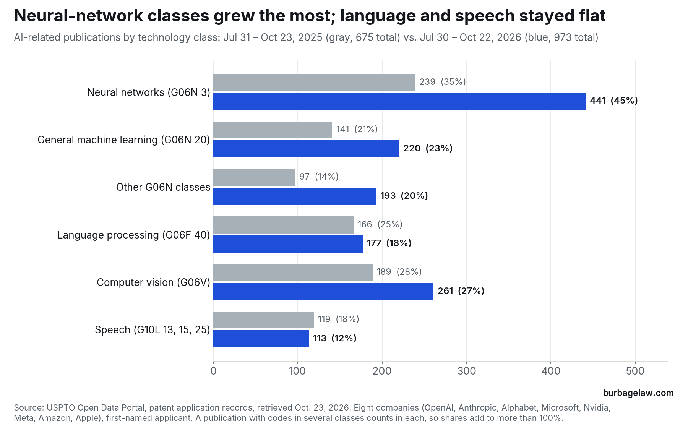
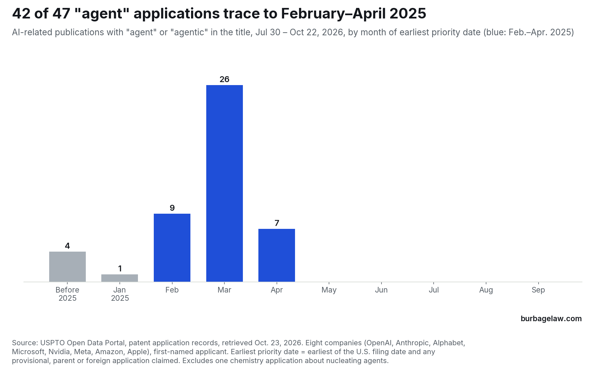

Data · Who is filing on what, edition 3
Big-company AI applications with “agent” in the title tripled, and almost all trace to early 2025
AI-related published U.S. applications of eight large AI companies, sorted by technology class and title terms, for the 13 weekly publication dates from July 30 to October 22, 2026, compared with the same weeks of 2025.
Listen · Thinking Makes It So, 2026-10-23 · 7 min
All episodes · Subscribe: Apple Podcasts · Spotify
The short version
The eight companies tracked in this series published 973 AI-related U.S. applications in the 13 weeks ending October 22, 2026, up from 675 in the same weeks of 2025. The growth was not spread evenly. Applications classified as neural networks rose from 239 to 441, and they now appear on 45% of the eight companies’ AI-related publications, up from 35%. Language processing barely moved, from 166 to 177, and speech fell from 119 to 113.
The sharpest change is in titles. Applications with “agent” or “agentic” in the title went from 15 to 47. Of the 47, 42 have an earliest priority date in February, March or April 2025.


Where the growth is
The shift toward neural-network classes is not one company pulling the average. Within Alphabet’s AI-related publications, the neural-network share rose from 41% to 51%. Within Nvidia’s it rose from 41% to 55%, and within Microsoft’s from 36% to 42%. Nvidia also nearly doubled its computer vision publications, from 59 to 106.
Language processing is the class most people would associate with chatbots, and it barely grew. Titles tell the same story: publications with “language model” or “LLM” in the title went from 58 to 66. Most of the growth sits in the neural-network class, which added 202 publications, and in the other G06N classes, which added 96.
Why the agent applications arrived now
A tripling from 15 deserves suspicion, so we checked it. Each application number appears once. One title, a chemistry application about nucleating agents, was excluded. Two of the 47 were opened in a second source, FreePatentsOnline, and their titles, applicants and filing dates match the USPTO records. The 2025 figure is itself inflated by one batch: seven of the 15 were Anthropic applications published the same week. Without them, the count went from 8 to 47. The count includes agents in the older reinforcement-learning sense, such as DeepMind applications on controlling agents, as well as the newer software agents that carry out tasks.
Upon review, I conclude that the timing comes from the calendar. The USPTO publishes an application about 18 months after its earliest priority date (35 U.S.C. 122(b)), and 43 of the 47 published within a week of 18 months after theirs. Their priority dates cluster in the first months of 2025: 9 in February, 26 in March and 7 in April. The increase itself means these companies filed far more agent applications in those months than in the same months of 2024. Some were filed as regular U.S. applications in those months. Others were filed later and claim a provisional application from those months; Nvidia’s five applications on agent workflows, all filed October 15, 2025, each claim a provisional application filed March 16, 2025.
This was not one company’s program. Alphabet has 18 of the 47, Microsoft 16 and Nvidia 10. The applications name 174 different inventors, and 19 outside law firms appear in their correspondence addresses, with Fish & Richardson on the most, eight. The filing months follow the industry’s public turn to agents: Google introduced Gemini 2.0 on December 11, 2024 as a model for “the agentic era,” and OpenAI released its Operator agent on January 23, 2025. The records do not say why any company filed when it did.


What it means for in-house counsel
If your company files on AI agents, treat these 47 as references dated early 2025 or earlier, not 2026. A published application is prior art as of its effective filing date, which can be the date of a provisional or foreign application it is entitled to claim, for whatever that earlier application describes (35 U.S.C. 102(a)(2) and 102(d)). Anything you filed on agents after early 2025 may now face them.
Consider whether you should rely on clearance or novelty searches run on agent technology today. These publications reach only priority dates through about April 2025. Whatever these companies filed on agents after that has not yet reached its 18-month publication date, unless they asked for early publication.
When performing a search, search by class, not by keywords alone. Most of the growth is in G06N 3, the neural-network class. A search limited to language processing (G06F 40), or to titles that say “language model,” will miss most of what these companies are publishing.
Method
Data: USPTO Open Data Portal, patent application records, retrieved October 23, 2026. The windows are the 13 weekly publication dates from July 30 to October 22, 2026, and from July 31 to October 23, 2025.
Companies are counted by first-named applicant only, with name variants combined: OpenAI, Anthropic, Alphabet (Google LLC, GDM Holding LLC, DeepMind Technologies Limited), Microsoft, Nvidia, Meta, Amazon and Apple. Each application is counted once.
A publication counts as AI-related if it carries a CPC code in G06N, G06F 40, G06V, or G10L 13, 15 or 25, or if its title uses an AI term such as “machine learning,” “neural network,” “language model” or “generative.” Technology classes are counted from all CPC codes on the record as retrieved, so a publication with codes in several classes counts in each. “Other G06N classes” are G06N 5 (knowledge-based models), G06N 7 (probabilistic models), G06N 10 (quantum computing) and G06N 99.
Agent titles are AI-related publications whose title contains “agent,” “agents” or “agentic” as a word. One chemistry application about nucleating agents (US20260290519A1) is excluded. The earliest priority date is the earliest of the U.S. filing date and the filing dates of any provisional, parent or foreign application the record claims. Law firms are those named in the correspondence address; firms that appear under two names are counted once, and the companies’ own in-house addresses are not counted as firms.
Counts under about 20, such as Anthropic’s 7 and 1 and OpenAI’s 11 and 24, swing widely from period to period and are not a trend.
Source: USPTO Open Data Portal · Google, Introducing Gemini 2.0: our new AI model for the agentic era (December 11, 2024) · OpenAI, Introducing Operator (January 23, 2025) · FreePatentsOnline, US 2026/0300641 (Microsoft, System for generating an agentic system) · FreePatentsOnline, US 2026/0277667 (Nvidia, Task agnostic planning and execution of agent workflows)
Data and citation
Download the data (Excel spreadsheet, 218 KB). It holds the figures behind each chart and every application counted, with its application number, publication number, date, applicant and title, so any figure here can be checked or reused.
You may quote, chart and republish these figures with a citation to this page. Suggested citation:
Jon Burbage, Big-company AI applications with “agent” in the title tripled, and almost all trace to early 2025, Burbage Law: Who Is Filing on What, ed. 3 (Oct. 23, 2026), https://burbagelaw.com/data/2026-10-23-what-big-ai-filers-are-claiming.html
← All data editions · Developments
Burbage Law is the practice of Jon Burbage, a registered patent attorney. 342 United States patents have issued from applications he wrote; the full list is on the Patents page. More about Jon Burbage.
These figures are computed from public USPTO records as described above. They are general information, not legal advice, and do not create an attorney-client relationship.